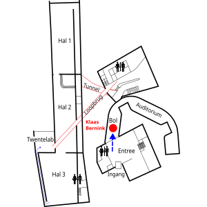
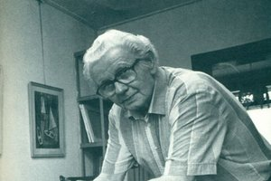
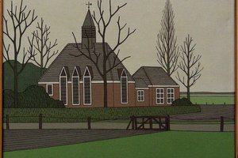
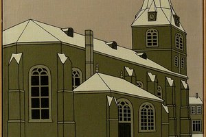
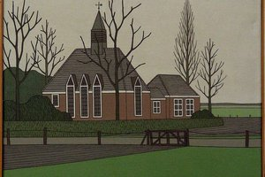
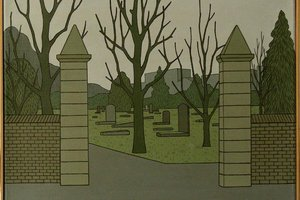
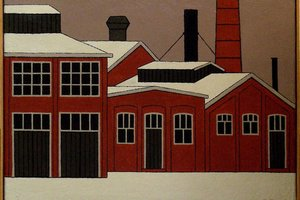
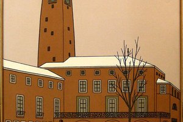
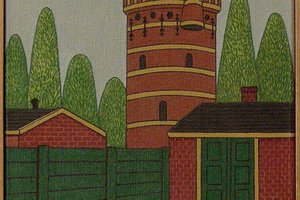
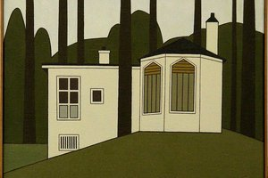

Klaas Bernink
Audiotour bij een selectie uit het werk van de Enschedese schilder Klaas Bernink
Stops in deze tour
-

Stop 1 Route naar de expositie van Klaas Bernink -

Stop 2 Inleiding -

Stop 3 1. Johanneskerk Twekkelo -

Stop 4 2. Grote kerk Enschede -

Stop 5 3. Klompenkerkje -

Stop 6 4. Oude Joodse begraafplaats -

Stop 7 5. Oude gasfabriek -

Stop 8 6. Stadhuis Enschede -

Stop 9 7. Watertoren Hoog en Droog -

Stop 10 8. Apenhof in Florapark -
Stop 11 Tenslotte.....